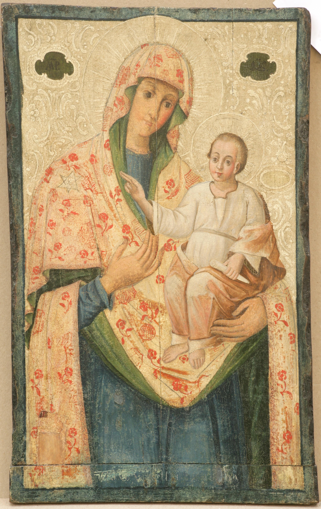

Muzeul Naţional de Artă al Moldovei deţine o colecţie valoroasă de artă religioasă. Colecţia e compusă din circa 1200 de piese: icoane, obiecte de cult, cărţi bisericești, etc. Colecţia s-a constituit în rezultatul unor expediţii pentru studierea operelor de cult, muncă iniţiată de istoricul și criticul de artă Kir Rodnin, la începutul anilor 60 ai secolului trecut în colaborare cu Ada Zevin, pictoriţă și critic de artă, asistaţi de un grup de restauratori și muzeografi. În baza unei Hotărâri de Guvern (nr. 287 din 29 august 1968) a fost constituit Fondul Republican de Artă Medievală din Moldova, ca o subdiviziune a muzeului.

Într-o lume ireversibil sedusă de viteză și tehnologii, icoana invită la repaos, introspecţie și conștientizare a ceea ce suntem sau ar trebui să fim. Muzeul Naţional de Artă al Moldovei, prin piesele Colecţiei de Artă Religioasă prezentate în expoziţia permanentă, oferă un spaţiu pentru refugiu și reflecţie, dar și bucuria de a admira opere de o certă valoare artistică.
